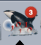
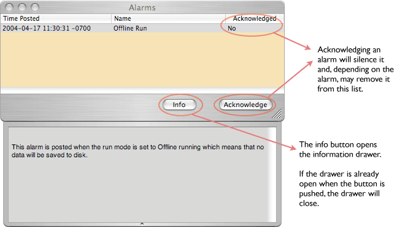
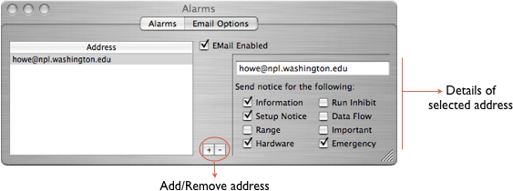

There are a large number of alarms that ORCA can post when something is wrong. A partial list is found here. It is unlikely that the list is complete as alarms are added as the code base expands. When alarms are posted the alarm dialog will appear and the ORCA icon in the application dock will have a alarm count badge overlay like so: 
Here is the main alarm dialog:

Alarms are sorted by severity, with the most recent and most severe first in the list. When alarms are posted, cleared, or acknowledged, an entry is made in the status log.
Starting in v5.9 you can have a list of people that wish to receive e-mail notifications of selected alarms.

A list of the alarms that ORCA currently can post. This list may not be complete.
| No Physical XXX Found | The host computer doesn't have a corresponding PCI card, i.e. no 620.
Action: Check that the physical hardware matches the software configuration. |
| No VME Crate Power | No VME crate power detected. Either the power is off or a cable has come unconnected.
Action: Check the crate power and the cables. |
| Data Queue Full | The data rate is too high for ORCA process.
Action: Lower the data rate or reduce the processing load by closing plotters or removing the data collection object. Try closing windows that update often. |
| Offline Run | A notification that the run control is in the offline state. This means that no data will be stored to disk or dispatched.
Action: The offline mode can be toggled on the run control dialog. |
| XXXX dead! | A connected client (named XXXX) missed several heartbeats and was declared dead.
Action: Check that the remote client is still running. Restart as needed. |
| HV Power Cycled | A notification alarm is to warn that the HV control power was cycled.
Action: Check the status of the HV. HV conditions will have to be reestablished. |
| HV No Low Power | The HV low power is off.
Action: Check the HV low power rack. |
| HV Current Not Checked (Polling Off) | This alarm is a warning that the HV is not being polled and no HV safety checks are being done.
Action: The HV polling can be turned off/on from the HV ramp dialog. |
| HV High Current (X) | The HV current exceeded limits and the HV supply XX was ramped to zero as a precaution.
Action: Determine the reason for the high current. |
| HV ADC DAC Mismatch (X) | The HV read back ADC is not matching the HV set point.
Action: Most likely a hardware problem. Check cables, HV control board, etc. |
| Using Software Generated GTID | The trigger card is set to generate global trigger ids using software rather that hardware.
Action: This function can be toggled on the trigger card dialog. |
| Trigger Card Using NO Hardware | The configuration is set to run without using the trigger card hardware.
Action: This is usually done in test modes when the trigger card hardware is not available. This function is toggled on the trigger card dialog. |
| SW Limit | The motor controller has reached the software limit
Action: This is because the motor has been told to move the motor position beyond the software limit. Either adjust the position requested or change the software limit. |
| Run # did not start | The run did not start due to an error.
Action: Examine why the run did not start and correct. Often it is a timeout or error in some component needed by the readout list that is performed at run start. |
| No driver found | No software driver for the PCI card (either VME or CAMAC) was found.
Action: Install the PCI card driver and reboot the computer. |
| eCPU did not start | The eCPU failed to start at the beginning of the run.
Action: Stop and download the eCPU code. If problem persists cycle power on the VME crate. |
| eCPU appears dead | The eCPU failed to start or is no longer working during run.
Action: Stop run and then stop and download the eCPU code. If problem persists cycle power on the VME crate. |
| Cable check failed | NCD specific alarm -- something is not cabled as the tube map describes.
Action: Either fix the cabling problem or change the tube map. |
| Hardware Check failed | The configuration no longer reflects the state of the hardware.
Action: Fix the configuration to reflect the harware or capture the state. |
| Shaper Card Check failed | The Shaper card parameters have been changed since the state was captured.
Action: Return the parameters to the captured values or capture the state. |
| Mux Check failed | The mux parameters have been changed since the state was captured.
Action: Return the parameters to the captured values or capture the state. |
| Trigger Card Check failed | The Trigger Card parameters have been changed since the state was captured.
Action: Return the parameters to the captured values or capture the state. |